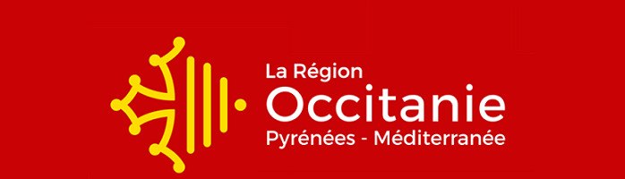
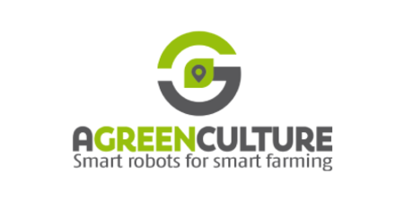

En quoi consiste ce site web ?

Le conseil conseil d'Occitanie souhaite présenter différents acteurs du secteur numérique
engagés dans la Greent Tech (réseaux, développement, web, sécurité informatique...) pour montrer ses atouts
(chiffres, dynamisme économique, empreinte écologique).
Nous avons été chargé de sélectionner des acteurs locaux de la Green Tech pour les comparés sur ce site web écoresponsable.
Le terme Green Tech est issu des mots anglais : "green" et "technology". Il correspond à l'usage des nouvelles technologies au sein du développement durable. De plus, il décrit aussi les start-uo qui mettent en place des innovations technologiques au service de la protection de l'environnement. Ainsi, l'objectif recherché est de réduire l'impact néfaste des humains sur la planête grâce aux nouvelles technologies.
Le terme Green Tech est issu des mots anglais : "green" et "technology". Il correspond à l'usage des nouvelles technologies au sein du développement durable. De plus, il décrit aussi les start-uo qui mettent en place des innovations technologiques au service de la protection de l'environnement. Ainsi, l'objectif recherché est de réduire l'impact néfaste des humains sur la planête grâce aux nouvelles technologies.
Le choix de nos start-up
La start-up Naïo Technologies est une start-up pionnière dans la robotique agricole.
Elle conçoit depuis 2011, des solutions innovantes et efficaces aux agriculteurs et viticulteurs. Elle développe et commercialise des
robots autonomes et 100% électriques qui permettent d'assister les agriculteurs et viticulteurs dans leurs travail quotidien.
Ils permettent d'alléger la charges de travail de ces derniers ainsi que d'optimiser la rentabilité des exploitations en limitant l'utilisation
d'intrants chimiques.
La start-up Naïo Technologies est une start-up pionnière dans la robotique agricole.
Elle conçoit depuis 2011, des solutions innovantes et efficaces aux agriculteurs et viticulteurs. Elle développe et commercialise des
robots autonomes et 100% électriques qui permettent d'assister les agriculteurs et viticulteurs dans leurs travail quotidien.
Ils permettent d'alléger la charges de travail de ces derniers ainsi que d'optimiser la rentabilité des exploitations en limitant l'utilisation
d'intrants chimiques.
